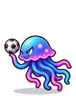
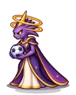

Wiki › Lugares › Saturno — Anéis de Cristal
Saturno — Anéis de Cristal
Saturno Nível dos adversários: 357–378
Como chegar
🧭 Viagem: 🚀 Vá até a Estação Espacial (no Rio, com a Dra. Estela — precisa do Traje de Astronauta) e lá a Torre de Controle leva até Saturno.
🧭 Caminho: a viagem já deixa você lá.
Adversários aqui (4)
| Nome | Nível | XP | O que deixa cair | |
|---|---|---|---|---|
| Anelzinho Flutuante ×4 | 357 | 108.650 | ||
| Cristalino ×4 | 365 | 136.290 | ||
 | Água-viva Espacial ×4 | 372 | 117.972 | |
 | Rainha dos Anéis Chefão | 378 | 3.143.440 |
Personagens aqui
Saídas para
🎯 Carrossel dos Anéis · 🎯 Caverna de Cristal Violeta · 🎯 Lago das Águas-vivas
Placas
💎 JARDIM DOS CRISTAIS · 🪐 SATURNO · ⭐ PRAÇA DA COLÔNIA · 👑 ESTÁDIO DE RAINHA DOS ANÉIS (nível 378) · 🎯 ÁREA DE CAÇA: Carrossel dos Anéis · 🎯 ÁREA DE CAÇA: Caverna de Cristal Violeta · 🎯 ÁREA DE CAÇA: Lago das Águas-vivas